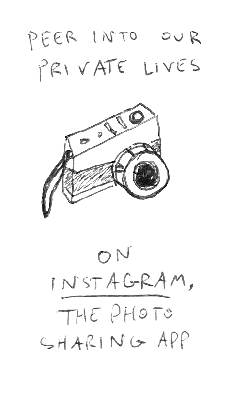
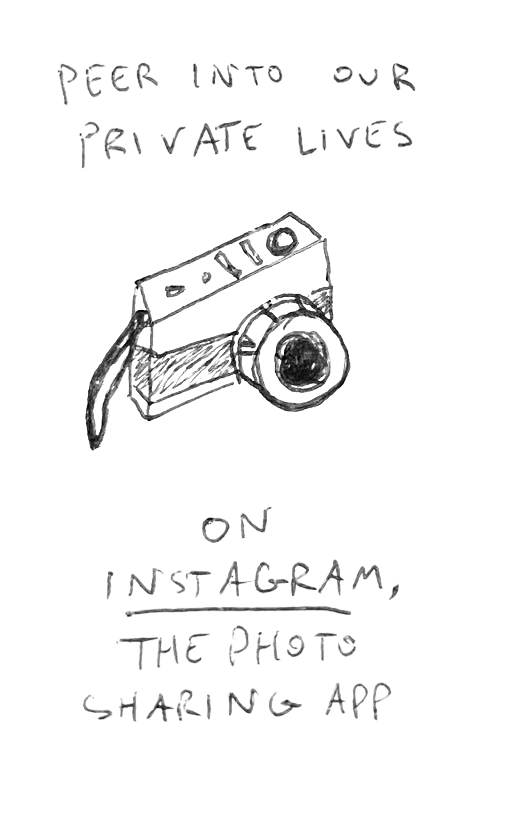

Verboten writes charming, folky pop songs about disillusionment. Songwriter Foster Powell pairs bright, melodic hooks with poetic lyrics and a sound indebted to 90s-era alt rock. The band has toured for several years in the Northeast USA, recently relocating to Bellingham, WA and releasing their first full-length, Life Expectancy, in 2024. For fans of Belle and Sebastian, Elliott Smith, Andy Shauf.
“Gentle guitar parts, and acoustic strums sparkle alongside microscopic details in chime and soft drums.” - Small Albums
“There’s a strong Elliott Smith and Belle & Sebastian influence in Foster Powell’s vocal writing and delivery.” - Glide Magazine
“A melodic, understated vocal charm.” - Obscure Sounds